Esta apostila tem como objetivo apresentar os conceitos fundamentais de estatística descritiva e inferencial utilizando a linguagem R para análise de dados experimentais. A estatística é uma ciência que fornece ferramentas essenciais para a tomada de decisões baseadas em dados, permitindo extrair informações significativas de conjuntos de observações e fazer inferências sobre populações a partir de amostras.
Ao final do estudo desta apostila, você será capaz de:
Compreender os fundamentos teóricos da estatística descritiva e inferencial
Aplicar medidas de tendência central, dispersão e posição
Avaliar a normalidade de distribuições de dados através de métodos gráficos e numéricos
Realizar e interpretar análises de variância (ANOVA)
Compreender os pressupostos dos testes estatísticos
Interpretar resultados estatísticos de forma crítica
Criar visualizações informativas e profissionais
O que é estatística?
A estatística pode ser definida como a ciência que se dedica à coleta, organização, análise, interpretação e apresentação de dados. Ela se divide em dois grandes ramos:
Estatística descritiva: organiza e resume dados de forma a torná-los compreensíveis, utilizando tabelas, gráficos e medidas resumo. O objetivo é descrever as características principais de um conjunto de dados sem fazer inferências que vão além desses dados.
Estatística inferencial: permite fazer generalizações sobre uma população com base em informações obtidas de uma amostra. Utiliza a teoria da probabilidade para estimar parâmetros populacionais e testar hipóteses.
Por que usar o R para análise estatística?
O R é uma linguagem de programação e ambiente de software livre especialmente desenvolvido para análise estatística e visualização de dados. Entre suas principais vantagens estão:
Gratuito e de código aberto: qualquer pessoa pode usar, modificar e distribuir
Ampla comunidade: milhares de pacotes disponíveis para diferentes análises
Reprodutibilidade: análises podem ser documentadas e replicadas facilmente
Visualização avançada: gráficos de alta qualidade com pacotes como ggplot2
Flexibilidade: desde análises simples até modelagens estatísticas complexas
Conceitos fundamentais
População e amostra
População: conjunto completo de todos os elementos ou observações de interesse em um estudo. Por exemplo, todas as plantas de uma determinada espécie em uma região.
Amostra: subconjunto representativo da população, selecionado para estudo. Por exemplo, 100 plantas selecionadas aleatoriamente para medições.
A inferência estatística consiste em usar informações da amostra para tirar conclusões sobre a população.
Variáveis
Variável: característica que pode ser medida ou observada em cada elemento da amostra ou população. As variáveis podem ser classificadas em:
Variáveis qualitativas (categóricas): - Nominal: não possui ordem natural (ex: cor, sexo, espécie) - Ordinal: possui ordem natural (ex: nível de escolaridade, classificação)
Variáveis quantitativas (numéricas): - Discreta: assume valores inteiros (ex: número de filhos, contagem de células) - Contínua: pode assumir qualquer valor em um intervalo (ex: altura, peso, temperatura)
Parâmetro e estatística
Parâmetro: medida numérica que descreve uma característica da população (geralmente desconhecido). Representado por letras gregas (μ para média populacional, σ para desvio padrão populacional).
Estatística: medida numérica calculada a partir dos dados da amostra (conhecido). Representado por letras latinas (x̄ para média amostral, s para desvio padrão amostral).
Conteúdo programático
Estatística descritiva: medidas de tendência central, dispersão, posição e forma
Distribuições de probabilidade: conceitos de probabilidade e testes de normalidade
Análise de variância (ANOVA): comparação de médias entre grupos
Interpretação de resultados: comunicação científica e visualização de dados
Dataset CO2: contexto experimental
Sobre o experimento
Utilizaremos o dataset CO2, que contém dados de um experimento clássico sobre tolerância ao frio em plantas de Echinochloa crus-galli (capim-arroz) submetidas a diferentes condições de temperatura. Este experimento foi conduzido para investigar como diferentes origens geográficas e tratamentos térmicos afetam a capacidade fotossintética das plantas.
A fotossíntese é o processo pelo qual as plantas convertem luz solar, água e dióxido de carbono (CO2) em glicose e oxigênio. A taxa de absorção de CO2 é um indicador direto da atividade fotossintética e, consequentemente, da saúde e capacidade produtiva da planta.
Importância científica
Este tipo de estudo é fundamental para:
Entender adaptações climáticas: plantas de diferentes regiões podem ter desenvolvido adaptações ao frio
Agricultura: conhecer a tolerância ao frio é essencial para selecionar cultivares adequadas
Mudanças climáticas: prever como as plantas responderão a variações de temperatura
Fisiologia vegetal: compreender mecanismos de resposta ao estresse térmico
Design experimental
O experimento foi cuidadosamente planejado com os seguintes componentes:
Fatores experimentais:
Origem (type): duas procedências geográficas
Quebec: região com invernos rigorosos (clima frio)
Mississippi: região com invernos amenos (clima quente)
Tratamento (treatment): duas condições de temperatura
Resfriadas (chilled): plantas expostas a baixas temperaturas antes das medições
Não resfriadas (nonchilled): plantas mantidas em temperatura ambiente
Concentração de CO2 (conc): sete níveis diferentes
Variando de 95 a 1000 mL/L
Permite avaliar a resposta da planta a diferentes disponibilidades de CO2
Unidades experimentais:
12 plantas no total (6 de Quebec e 6 de Mississippi)
Cada planta foi medida em todas as 7 concentrações
Total de 84 observações (12 plantas × 7 concentrações)
Variável resposta:
Taxa de absorção de CO2 (uptake): medida em μmol/m²s (micromoles por metro quadrado por segundo)
Indica a intensidade da fotossíntese
Hipóteses científicas
Com base no conhecimento prévio sobre adaptações ao clima, espera-se que:
Plantas de Quebec (clima frio) possam ter desenvolvido maior tolerância ao resfriamento
O tratamento de resfriamento reduza a atividade fotossintética
Maiores concentrações de CO2 aumentem a taxa de absorção (até um ponto de saturação)
Possa haver interação entre origem e tratamento (o efeito do frio pode ser diferente para plantas de cada origem)
Plant Type Treatment conc uptake
Qn1 : 7 Quebec :42 nonchilled:42 Min. : 95 Min. : 7.70
Qn2 : 7 Mississippi:42 chilled :42 1st Qu.: 175 1st Qu.:17.90
Qn3 : 7 Median : 350 Median :28.30
Qc1 : 7 Mean : 435 Mean :27.21
Qc3 : 7 3rd Qu.: 675 3rd Qu.:37.12
Qc2 : 7 Max. :1000 Max. :45.50
(Other):42
Code
# Dimensões do datasetdim(CO2)
[1] 84 5
Estatística descritiva
Conceitos fundamentais
A estatística descritiva é o ramo da estatística que organiza, resume e apresenta dados de forma informativa, sem fazer inferências além dos dados observados. É o primeiro passo de qualquer análise de dados, pois permite conhecer as características básicas do conjunto de dados antes de aplicar técnicas mais complexas.
A estatística descritiva é essencial porque:
Sintetiza informações: reduz grandes conjuntos de dados a medidas resumo compreensíveis
Identifica padrões: revela tendências, variabilidade e características dos dados
Detecta anomalias: ajuda a identificar valores discrepantes (outliers) ou erros
Facilita comparações: permite comparar diferentes grupos ou variáveis
Embasa decisões: fornece informações objetivas para tomada de decisão
Principais componentes:
Medidas de tendência central: valores típicos ou centrais da distribuição (onde os dados se concentram)
Medidas de dispersão: variabilidade dos dados (o quanto os dados se espalham)
Medidas de posição: localização relativa dos dados (divisão em partes)
Medidas de forma: simetria e achatamento da distribuição (formato da distribuição)
Medidas de tendência central
As medidas de tendência central são valores que representam o “centro” ou o valor “típico” de um conjunto de dados. Elas resumem todo o conjunto de dados em um único valor representativo.
Média aritmética
A média aritmética é a medida de tendência central mais conhecida e utilizada. É calculada somando-se todos os valores e dividindo pelo número de observações.
# Resumo completo da variável uptakesummary(CO2$uptake)
Min. 1st Qu. Median Mean 3rd Qu. Max.
7.70 17.90 28.30 27.21 37.12 45.50
Interpretação dos Resultados
A média de 27.21 μmol/m²s indica uma absorção moderada de CO2 pelas plantas. A mediana de 28.30 sugere que a distribuição é aproximadamente simétrica, pois está próxima da média. A amplitude de 37.8 unidades (mínimo de 7.7 e máximo de 45.5) mostra uma variabilidade considerável nos dados.
Medidas de dispersão
As medidas de dispersão quantificam a variabilidade ou espalhamento dos dados em torno da medida de tendência central. Enquanto as medidas de tendência central indicam onde os dados se concentram, as medidas de dispersão indicam o quanto eles se afastam desse centro.
A dispersão é importante porque:
Complementa a tendência central: dois conjuntos de dados podem ter a mesma média mas variabilidades muito diferentes
Indica confiabilidade: menor dispersão geralmente indica maior precisão
Permite comparações: possibilita comparar a variabilidade entre diferentes grupos
Fundamenta inferências: é essencial para testes de hipóteses e intervalos de confiança
Amplitude
A amplitude (ou range) é a medida de dispersão mais simples. É a diferença entre o maior e o menor valor do conjunto de dados.
Fórmula:
\[A = x_{max} - x_{min}\]
Propriedades:
Fácil cálculo: apenas dois valores são necessários
Sensível a outliers: um único valor extremo altera drasticamente a amplitude
Limitada: não usa informação de todos os dados
Útil para verificação: rápida visão da extensão dos dados
Variância
A variância é a média dos quadrados dos desvios em relação à média. Mede o quanto os dados se afastam da média, considerando todos os valores.
Onde: - \(s^2\) é a variância amostral - \(n\) é o número de observações - \(x_i\) é cada observação individual - \(\bar{x}\) é a média amostral - \((x_i - \bar{x})\) é o desvio de cada observação em relação à média
Por que dividir por (n-1)?
Usamos (n-1) em vez de n para obter um estimador não viesado da variância populacional. Isso é chamado de correção de Bessel. Quando calculamos a variância amostral usando a média amostral (que já foi calculada a partir dos mesmos dados), perdemos um grau de liberdade, pois os desvios somam zero.
Propriedades da variância:
Sempre não-negativa:\(s^2 \geq 0\)
Zero apenas quando todos os valores são iguais
Unidade ao quadrado: se os dados são em metros, a variância é em metros quadrados
Sensível a outliers: valores extremos têm grande impacto (pois são elevados ao quadrado)
Interpretação:
Variância próxima de zero: dados muito concentrados ao redor da média
Variância grande: dados muito dispersos
Desvio padrão
O desvio padrão é a raiz quadrada da variância. É a medida de dispersão mais utilizada na prática.
O desvio padrão tem a mesma unidade dos dados originais, facilitando a interpretação. Se os dados são em kg, o desvio padrão também é em kg (enquanto a variância seria em kg²).
Propriedades:
Mesma unidade dos dados: facilita interpretação
Sempre não-negativo:\(s \geq 0\)
Interpretação com a média: a maioria dos dados está dentro de alguns desvios padrão da média
Regra empírica (distribuição normal):
Aproximadamente 68% dos dados estão entre \(\bar{x} \pm s\)
Aproximadamente 95% dos dados estão entre \(\bar{x} \pm 2s\)
Aproximadamente 99.7% dos dados estão entre \(\bar{x} \pm 3s\)
Interpretação prática:
Desvio padrão pequeno: dados concentrados (homogêneos)
Desvio padrão grande: dados espalhados (heterogêneos)
Coeficiente de variação
O coeficiente de variação (CV) é uma medida de dispersão relativa, expressa em percentual. Permite comparar a variabilidade de conjuntos de dados com unidades diferentes ou médias muito diferentes.
Fórmula:
\[CV = \frac{s}{\bar{x}} \times 100\%\]
Onde: - \(s\) é o desvio padrão - \(\bar{x}\) é a média
Quando usar:
Comparar variabilidades: entre variáveis com unidades diferentes
Avaliar precisão: em experimentos ou medições
Comparar grupos: com médias muito diferentes
Interpretação (regras gerais para dados biológicos):
CV < 10%: baixa dispersão (dados muito homogêneos)
10% ≤ CV ≤ 20%: dispersão moderada
20% ≤ CV ≤ 30%: dispersão alta
CV > 30%: dispersão muito alta (comum em dados biológicos)
Limitações:
Não deve ser usado quando a média está próxima de zero
Não é apropriado para dados com valores negativos
Pode ser enganoso para distribuições muito assimétricas
Exemplo prático:
Suponha que temos: - Grupo A: média = 10 kg, s = 2 kg → CV = 20% - Grupo B: média = 100 kg, s = 10 kg → CV = 10%
Embora o grupo B tenha maior desvio padrão em termos absolutos, o grupo A tem maior variabilidade relativa.
O coeficiente de variação de aproximadamente 41.5% indica variabilidade moderada a alta, o que é esperado em dados experimentais biológicos. O desvio padrão de 11.3 representa cerca de 41% da média, sugerindo heterogeneidade nas respostas das plantas às diferentes condições experimentais.
Medidas de posição
As medidas de posição (ou separatrizes) dividem o conjunto ordenado de dados em partes iguais, permitindo localizar a posição relativa de um valor específico dentro da distribuição.
Quartis e percentis
Quartis dividem o conjunto de dados ordenado em quatro partes iguais, cada uma contendo 25% das observações:
Q1 (primeiro quartil): 25% dos dados estão abaixo deste valor
Q2 (segundo quartil): equivale à mediana (50% dos dados abaixo)
Q3 (terceiro quartil): 75% dos dados estão abaixo deste valor
Percentis (ou centis) dividem os dados em 100 partes iguais. O percentil k (Pk) é o valor abaixo do qual se encontram k% das observações.
Por exemplo: - P25 = Q1 (primeiro quartil) - P50 = Q2 = mediana - P75 = Q3 (terceiro quartil) - P90 = valor abaixo do qual estão 90% dos dados
Amplitude interquartílica (IQR)
A amplitude interquartílica é a diferença entre o terceiro e o primeiro quartil:
\[IQR = Q3 - Q1\]
Características do IQR:
Representa os 50% centrais: contém a metade central dos dados
Robusta a outliers: não é afetada por valores extremos
Útil para identificar outliers: base para critérios de detecção
Medida de dispersão resistente: alternativa ao desvio padrão em dados assimétricos
Interpretação:
IQR pequeno: dados concentrados (50% centrais próximos)
IQR grande: dados dispersos (50% centrais espalhados)
Resumo de cinco números (five-number summary)
O resumo de cinco números fornece uma visão completa da distribuição dos dados:
Mínimo
Q1 (primeiro quartil)
Mediana (Q2)
Q3 (terceiro quartil)
Máximo
Este resumo é a base para a construção de boxplots (gráficos de caixa), uma das visualizações mais informativas em estatística descritiva.
Medida Valor
25% Limite Inferior -10.9375
75% Limite Superior 65.9625
Número de Outliers 0.0000
Code
# Mostrar outliers identificadosoutliers
numeric(0)
Estatísticas Descritivas Completas
Code
# Usando o pacote psych para estatísticas detalhadasdescribe(CO2$uptake)
vars n mean sd median trimmed mad min max range skew kurtosis se
X1 1 84 27.21 10.81 28.3 27.33 14.83 7.7 45.5 37.8 -0.1 -1.35 1.18
Estatísticas por Grupo
Code
# Estatísticas descritivas por grupoestatisticas_grupos <- CO2 %>%group_by(Type, Treatment) %>%summarise(n =n(),Media =mean(uptake),Mediana =median(uptake),DP =sd(uptake),Min =min(uptake),Max =max(uptake),Q1 =quantile(uptake, 0.25),Q3 =quantile(uptake, 0.75),.groups ="drop" )kable(estatisticas_grupos, digits =2,caption ="Tabela 1: Estatísticas descritivas da absorção de CO2 por grupo")
Tabela 1: Estatísticas descritivas da absorção de CO2 por grupo
Type
Treatment
n
Media
Mediana
DP
Min
Max
Q1
Q3
Quebec
nonchilled
21
35.33
39.2
9.60
13.6
45.5
32.4
41.8
Quebec
chilled
21
31.75
35.0
9.64
9.3
42.4
27.3
38.7
Mississippi
nonchilled
21
25.95
28.1
7.40
10.6
35.5
22.0
31.1
Mississippi
chilled
21
15.81
17.9
4.06
7.7
22.2
12.5
18.9
Visualizações da Estatística Descritiva
Histograma com Densidade
Code
ggplot(CO2, aes(x = uptake)) +geom_histogram(aes(y =after_stat(density)), bins =15, fill ="#4A6FA5", color ="#224573",alpha =0.7) +geom_density(color ="#6B4F4F", linewidth =1.5) +geom_vline(aes(xintercept =mean(uptake)),color ="#224573", linetype ="dashed", linewidth =1) +geom_vline(aes(xintercept =median(uptake)),color ="#6B4F4F", linetype ="dotted", linewidth =1) +labs(title ="Distribuição da Absorção de CO2",subtitle ="Linha tracejada: média | Linha pontilhada: mediana",x ="Absorção de CO2 (μmol/m²s)",y ="Densidade") +theme_classic(base_size =14) +theme(plot.title =element_text(color ="#224573", face ="bold"),plot.subtitle =element_text(color ="#6B4F4F") )
Boxplot por Grupos
Code
ggplot(CO2, aes(x = Type, y = uptake, fill = Treatment)) +geom_boxplot(alpha =0.7, outlier.color ="#6B4F4F",outlier.size =2) +scale_fill_manual(values =c("#4A6FA5", "#E5D3B3"),labels =c("Não resfriada", "Resfriada")) +labs(title ="Absorção de CO2 por Origem e Tratamento",x ="Origem da Planta",y ="Absorção de CO2 (μmol/m²s)",fill ="Tratamento") +theme_classic(base_size =14) +theme(plot.title =element_text(color ="#224573", face ="bold"),legend.position ="bottom" )
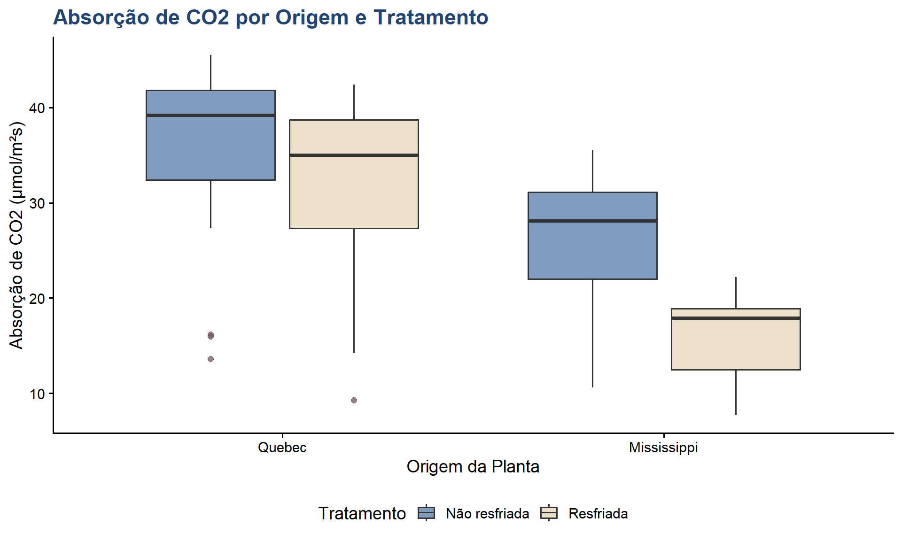
Violin Plot
Code
ggplot(CO2, aes(x = Type, y = uptake, fill = Type)) +geom_violin(alpha =0.6, trim =FALSE) +geom_boxplot(width =0.2, fill ="white", alpha =0.8,outlier.color ="#6B4F4F") +scale_fill_manual(values =c("#224573", "#4A6FA5")) +labs(title ="Distribuição da Absorção por Origem",subtitle ="Violin plot com boxplot sobreposto",x ="Origem da Planta",y ="Absorção de CO2 (μmol/m²s)") +theme_classic(base_size =14) +theme(plot.title =element_text(color ="#224573", face ="bold"),legend.position ="none" )
Distribuições de probabilidade
Fundamentos de probabilidade
Antes de abordar distribuições específicas, é importante compreender conceitos básicos de probabilidade.
O que é probabilidade?
Probabilidade é uma medida numérica da chance de ocorrência de um evento, variando de 0 (impossível) a 1 (certo). Pode ser expressa em decimal (0.5) ou percentual (50%).
Tipos de probabilidade:
Clássica: baseada em resultados igualmente prováveis
Exemplo: probabilidade de obter cara em uma moeda justa = 1/2
Frequentista: baseada em frequências relativas observadas
Exemplo: em 100 lançamentos, 53 caras → P(cara) ≈ 0.53
Subjetiva: baseada em julgamento ou crença pessoal
Exemplo: probabilidade de chuva amanhã segundo um meteorologista
Variável aleatória
Uma variável aleatória é uma variável cujo valor é determinado pelo resultado de um experimento aleatório.
Contínua: pode assumir qualquer valor em um intervalo
Exemplo: altura, peso, temperatura
Distribuição de probabilidade
Uma distribuição de probabilidade descreve como as probabilidades estão distribuídas entre os possíveis valores de uma variável aleatória.
Para variáveis discretas: - Função massa de probabilidade (PMF):\(P(X = x)\) - Exemplo: distribuição binomial, Poisson
Para variáveis contínuas: - Função densidade de probabilidade (PDF):\(f(x)\) - Exemplo: distribuição normal, exponencial
Propriedades importantes:
A probabilidade de qualquer valor específico é não-negativa
A soma (discretas) ou integral (contínuas) de todas as probabilidades é igual a 1
Conceito de distribuição normal
A distribuição normal (também chamada de gaussiana ou curva de Gauss) é a distribuição de probabilidade mais importante em estatística, tanto pela sua ocorrência natural em fenômenos biológicos e físicos quanto pelo seu papel fundamental na inferência estatística.
Definição matemática
A distribuição normal é uma distribuição contínua simétrica em forma de sino, caracterizada por dois parâmetros:
μ (mu): média populacional (parâmetro de locação)
σ (sigma): desvio padrão populacional (parâmetro de escala)
Onde: - \(x\) é a variável aleatória - \(e \approx 2.71828\) (número de Euler) - \(\pi \approx 3.14159\) (pi)
Esta função parece complexa, mas tem propriedades matemáticas elegantes que facilitam cálculos e inferências.
Propriedades fundamentais
1. Simetria: - A distribuição é perfeitamente simétrica em torno da média - Metade da área está à esquerda e metade à direita de μ - A média, mediana e moda coincidem
2. Forma de sino: - Atinge o pico (máximo) na média μ - Diminui gradualmente em ambas as direções - As caudas se estendem ao infinito (−∞ a +∞) - As caudas nunca tocam o eixo horizontal (assintóticas)
3. Área total = 1: - A área sob a curva representa probabilidade - A área total é sempre igual a 1 (100%)
4. Parâmetros determinam forma e posição: - μ determina onde a curva está centrada (translação horizontal) - σ determina quão espalhada é a curva (achatamento) - σ maior → curva mais achatada e larga - σ menor → curva mais pontiaguda e estreita
Regra empírica (68-95-99.7)
Para qualquer distribuição normal, temos:
68% dos dados estão entre μ ± 1σ: - P(μ - σ ≤ X ≤ μ + σ) ≈ 0.68 - Cerca de 2/3 dos dados estão dentro de um desvio padrão da média
95% dos dados estão entre μ ± 1.96σ: - P(μ - 1.96σ ≤ X ≤ μ + 1.96σ) ≈ 0.95 - Aproximadamente 95% dentro de dois desvios padrão - Base para intervalos de confiança de 95%
99.7% dos dados estão entre μ ± 3σ: - P(μ - 3σ ≤ X ≤ μ + 3σ) ≈ 0.997 - Quase todos os dados (99.7%) dentro de três desvios padrão - Valores além de ±3σ são extremamente raros
Distribuição normal padrão (Z)
A distribuição normal padrão é um caso especial com μ = 0 e σ = 1.
Padronização (transformação Z):
Qualquer variável normal pode ser convertida para a normal padrão usando:
\[Z = \frac{X - \mu}{\sigma}\]
Onde: - Z é o escore padronizado (Z-score) - X é o valor original - μ é a média - σ é o desvio padrão
Interpretação do Z-score:
Z = 0: valor exatamente na média
Z = 1: valor está 1 desvio padrão acima da média
Z = -2: valor está 2 desvios padrão abaixo da média
|Z| > 3: valor extremamente atípico
Por que a distribuição normal é importante?
1. Ocorrência natural:
Muitos fenômenos naturais seguem aproximadamente a distribuição normal: - Altura e peso de indivíduos de uma população - Erros de medição em instrumentos precisos - Características biológicas (pressão arterial, QI) - Rendimento de culturas agrícolas
2. Teorema central do limite (TCL):
Afirma que a distribuição das médias amostrais tende a ser normal, independentemente da distribuição original, quando o tamanho da amostra é suficientemente grande (geralmente n ≥ 30).
Implicações: - Justifica o uso de métodos baseados na normal mesmo quando os dados não são perfeitamente normais - Fundamenta a inferência estatística clássica - Permite construir intervalos de confiança e testes de hipóteses
3. Base para testes paramétricos:
Muitos testes estatísticos assumem normalidade: - Teste t de Student - ANOVA (análise de variância) - Regressão linear - Intervalos de confiança
4. Propriedades matemáticas convenientes:
Operações algébricas simples
Distribuições derivadas bem conhecidas (t, F, χ²)
Tabelas e funções computacionais amplamente disponíveis
Importância da normalidade
Por que testar normalidade?
Testar a normalidade dos dados é um passo fundamental antes de aplicar muitos procedimentos estatísticos. A verificação da normalidade é necessária porque:
1. Pressupostos de testes paramétricos:
Muitos testes estatísticos paramétricos assumem que os dados (ou os resíduos) seguem distribuição normal:
Teste t de Student: compara médias de dois grupos
Assume que cada grupo segue distribuição normal
Mais crítico para amostras pequenas (n < 30)
ANOVA (análise de variância): compara médias de três ou mais grupos
Assume que os resíduos seguem distribuição normal
Assume homogeneidade de variâncias (homocedasticidade)
Regressão linear: modela relação entre variáveis
Assume que os resíduos são normalmente distribuídos
Fundamental para intervalos de confiança e testes de hipóteses
Intervalos de confiança para média: estimativa de parâmetros
Baseados na distribuição t, derivada da normal
Requerem normalidade ou amostras grandes
2. Validade das inferências:
Quando os dados não seguem distribuição normal e usamos testes que assumem normalidade:
Erro tipo I inflacionado: probabilidade de falso positivo aumenta
Podemos rejeitar H0 quando ela é verdadeira
Nível de significância real > nível nominal (ex: 0.08 em vez de 0.05)
Perda de poder estatístico: capacidade de detectar efeitos reais diminui
Podemos não rejeitar H0 quando ela é falsa
Reduz a probabilidade de identificar diferenças verdadeiras
Intervalos de confiança imprecisos: coberturas incorretas
IC de 95% pode ter cobertura real de 90% ou 98%
Estimativas de parâmetros menos confiáveis
3. Escolha de métodos apropriados:
Conhecer a distribuição dos dados permite selecionar testes adequados e aplicar transformações quando necessário.
Consequências da violação da normalidade
Gravidade depende de:
1. Tamanho da amostra:
Amostras pequenas (n < 30): desvios da normalidade são mais problemáticos
Amostras grandes (n ≥ 30-50): testes paramétricos são mais robustos devido ao teorema central do limite
2. Tipo de desvio:
Assimetria moderada geralmente é tolerável
Assimetria severa pode requerer transformação
Outliers extremos podem distorcer severamente os resultados
3. Robustez dos testes:
ANOVA é razoavelmente robusta à violação de normalidade com grupos balanceados
Teste t é robusto com n > 30 e distribuições simétricas
Métodos para Avaliar Normalidade
Métodos Gráficos
Histograma com curva normal sobreposta
Q-Q plot (quantile-quantile plot)
Gráfico de densidade
Métodos Numéricos
Teste de Shapiro-Wilk
Teste de Kolmogorov-Smirnov
Teste de Anderson-Darling
Medidas de assimetria e curtose
Gráfico Q-Q Plot
Code
ggplot(CO2, aes(sample = uptake)) +stat_qq(color ="#4A6FA5", size =2, alpha =0.6) +stat_qq_line(color ="#224573", linewidth =1) +labs(title ="Q-Q Plot: Absorção de CO2",subtitle ="Avaliação de normalidade da variável resposta",x ="Quantis Teóricos",y ="Quantis Amostrais") +theme_classic(base_size =14) +theme(plot.title =element_text(color ="#224573", face ="bold"),plot.subtitle =element_text(color ="#6B4F4F") )
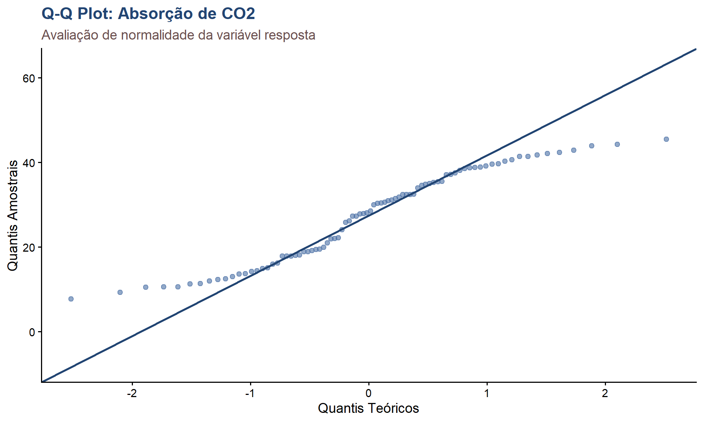
Teste de Shapiro-Wilk
Hipóteses
H0: os dados seguem distribuição normal
H1: os dados não seguem distribuição normal
Critério de Decisão
Se p-valor > 0.05: não rejeita H0 (evidência de normalidade)
Se p-valor ≤ 0.05: rejeita H0 (evidência de não normalidade)
Code
# Teste de Shapiro-Wilk para toda a amostrashapiro_resultado <-shapiro.test(CO2$uptake)shapiro_resultado
Shapiro-Wilk normality test
data: CO2$uptake
W = 0.94105, p-value = 0.0007908
Code
# Interpretaçãoif (shapiro_resultado$p.value >0.05) { interpretacao <-"Não há evidência para rejeitar a normalidade (p > 0.05)"} else { interpretacao <-"Há evidência contra a normalidade (p ≤ 0.05)"}data.frame(Estatistica_W = shapiro_resultado$statistic,P_valor = shapiro_resultado$p.value,Interpretacao = interpretacao)
Estatistica_W P_valor Interpretacao
W 0.9410488 0.0007907708 Há evidência contra a normalidade (p ≤ 0.05)
Teste por Grupo
Code
# Shapiro-Wilk por gruposhapiro_grupos <- CO2 %>%group_by(Type, Treatment) %>%summarise(n =n(),Shapiro_W =shapiro.test(uptake)$statistic,p_valor =shapiro.test(uptake)$p.value,Normal =ifelse(p_valor >0.05, "Sim", "Não"),.groups ="drop" )kable(shapiro_grupos, digits =4,caption ="Tabela 2: Teste de Shapiro-Wilk por grupo")
Tabela 2: Teste de Shapiro-Wilk por grupo
Type
Treatment
n
Shapiro_W
p_valor
Normal
Quebec
nonchilled
21
0.8253
0.0016
Não
Quebec
chilled
21
0.8529
0.0048
Não
Mississippi
nonchilled
21
0.8552
0.0052
Não
Mississippi
chilled
21
0.9482
0.3147
Sim
Outros Testes de Normalidade
Code
# Teste de Anderson-Darlingad_resultado <-ad.test(CO2$uptake)ad_resultado
Anderson-Darling normality test
data: CO2$uptake
A = 1.5793, p-value = 0.0004271
Code
# Teste de Kolmogorov-Smirnovks_resultado <-ks.test(CO2$uptake, "pnorm", mean =mean(CO2$uptake), sd =sd(CO2$uptake))ks_resultado
Asymptotic one-sample Kolmogorov-Smirnov test
data: CO2$uptake
D = 0.1077, p-value = 0.2842
alternative hypothesis: two-sided
media <-mean(CO2$uptake)dp <-sd(CO2$uptake)ggplot(CO2, aes(x = uptake)) +geom_histogram(aes(y =after_stat(density)), bins =15,fill ="#4A6FA5", color ="#224573",alpha =0.7) +stat_function(fun = dnorm, args =list(mean = media, sd = dp),color ="#6B4F4F", linewidth =1.5) +geom_vline(xintercept = media,color ="#224573",linetype ="dashed",linewidth =1) +labs(title ="Distribuição Observada vs Normal Teórica",subtitle =paste("Média:", round(media, 2), "| DP:", round(dp, 2)),x ="Absorção de CO2 (μmol/m²s)",y ="Densidade") +theme_classic(base_size =14) +theme(plot.title =element_text(color ="#224573", face ="bold") )
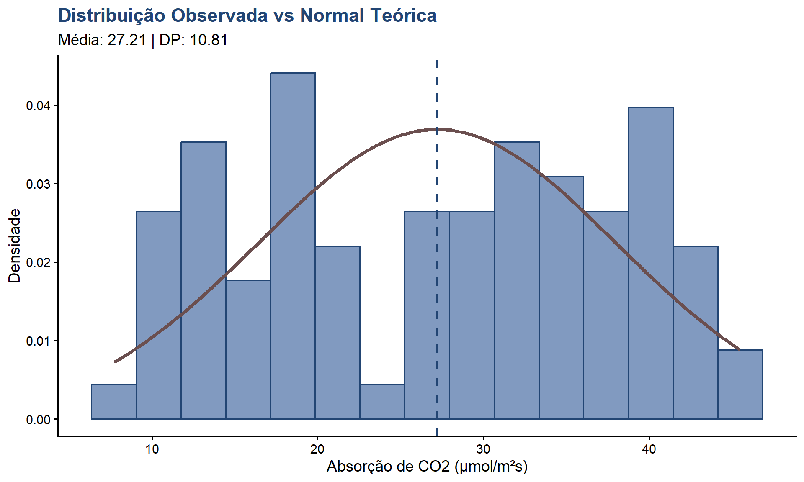
Análise de variância (ANOVA)
Conceito de ANOVA
Definição
ANOVA (Analysis of variance) é uma técnica estatística desenvolvida por Ronald Fisher na década de 1920 para comparar médias de três ou mais grupos simultaneamente, testando se existe diferença significativa entre elas. O nome pode parecer contraditório: embora o objetivo seja comparar médias, a técnica analisa a variabilidade (variância) dos dados.
O problema das comparações múltiplas
Por que não fazer múltiplos testes t?
Imagine que temos 4 grupos e queremos comparar todos entre si. Precisaríamos de:
Para k grupos: \(\binom{k}{2} = \frac{k(k-1)}{2}\) comparações
Problema do erro tipo I:
Se cada teste tem α = 0.05 (5% de chance de falso positivo):
Probabilidade de não cometer erro em um teste: 1 - 0.05 = 0.95
Probabilidade de não cometer erro em 6 testes independentes: \((0.95)^6 \approx 0.735\)
Probabilidade de cometer pelo menos um erro tipo I: \(1 - 0.735 = 0.265\) (26.5%!)
Este é o problema da inflação do erro tipo I. Com múltiplos testes, a probabilidade de encontrar pelo menos um falso positivo aumenta dramaticamente.
Vantagens da ANOVA
Controla o erro tipo I: mantém α constante (geralmente 0.05) independentemente do número de grupos
Mais eficiente estatisticamente: usa toda a informação disponível simultaneamente
Permite análise de múltiplos fatores: pode avaliar efeitos principais e interações
Mais poderosa: maior probabilidade de detectar diferenças reais quando existem
Tipos principais de ANOVA
ANOVA one-way (um fator): - Compara médias de 3+ grupos de um único fator - Exemplo: comparar absorção de CO2 entre 3 espécies diferentes
ANOVA two-way (dois fatores): - Avalia efeitos de dois fatores simultaneamente - Permite analisar interações entre fatores - Exemplo: avaliar efeito de origem E tratamento na absorção
ANOVA com medidas repetidas: - Para dados dependentes (mesmos sujeitos medidos repetidamente) - Exemplo: mesma planta medida em diferentes tempos
ANOVA multivariada (MANOVA): - Múltiplas variáveis resposta simultaneamente - Exemplo: avaliar absorção de CO2 E produção de biomassa
Princípios da ANOVA
A lógica da ANOVA
A ANOVA compara duas estimativas de variabilidade:
1. Variabilidade entre grupos (between-group variance): - Reflete diferenças entre as médias dos grupos - Se os grupos são diferentes, esta variabilidade será grande
2. Variabilidade dentro dos grupos (within-group variance): - Reflete a variação natural dentro de cada grupo - Representa o “ruído” ou erro aleatório
Lógica: se as médias dos grupos são realmente diferentes, a variabilidade entre grupos será substancialmente maior que a variabilidade dentro dos grupos.
Decomposição da variância
A variância total dos dados é dividida em componentes:
Onde: - \(X_{ij}\) é a j-ésima observação do i-ésimo grupo - \(\bar{X}_{i.}\) é a média do grupo i - \(\bar{X}_{..}\) é a média geral - \(k\) é o número de grupos - \(n_i\) é o número de observações no grupo i
Graus de liberdade
Os graus de liberdade (gl ou df) representam o número de valores que podem variar livremente:
Total:\(gl_{total} = N - 1\) - N = número total de observações
Entre grupos:\(gl_{entre} = k - 1\) - k = número de grupos
Dentro dos grupos:\(gl_{dentro} = N - k\) - N - k = total de observações menos o número de grupos
Quadrados médios (mean squares)
Os quadrados médios são obtidos dividindo SS pelos respectivos gl:
\(MS_{entre}\): variância entre as médias dos grupos (estimativa da variabilidade entre grupos)
\(MS_{dentro}\): variância pooled dentro dos grupos (estimativa do erro)
Estatística F
A estatística F é a razão entre os dois quadrados médios:
\[F = \frac{MS_{entre}}{MS_{dentro}}\]
Interpretação do valor F:
F ≈ 1: variabilidade entre grupos é similar à variabilidade dentro dos grupos
Não há evidência de diferença entre as médias
F >> 1: variabilidade entre grupos é muito maior que dentro dos grupos
Forte evidência de diferença entre as médias
F < 1: situação incomum, geralmente indica problemas nos dados
Distribuição F:
Sob H0 (não há diferença entre grupos), F segue uma distribuição F com: - gl₁ = k - 1 (graus de liberdade do numerador) - gl₂ = N - k (graus de liberdade do denominador)
O p-valor é calculado como P(F > F_observado) nesta distribuição.
Pressupostos da ANOVA
Para que os resultados da ANOVA sejam válidos, três pressupostos devem ser satisfeitos:
1. Independência das observações
Definição: as observações devem ser independentes entre si, ou seja, o valor de uma observação não deve influenciar ou estar relacionado ao valor de outra.
Como garantir: - Design experimental adequado - Amostragem aleatória - Evitar medidas repetidas (usar ANOVA apropriada se houver) - Cada unidade experimental recebe apenas um tratamento
Violação: - É a mais séria de todas - Não há teste estatístico confiável para verificar - Deve ser garantida pelo delineamento experimental - Violação pode invalidar completamente os resultados
Exemplos de violação: - Medir a mesma planta várias vezes e tratar como observações independentes - Usar subamostras (múltiplas medidas da mesma unidade) como réplicas - Dados agrupados espacialmente ou temporalmente sem controle adequado
2. Normalidade dos resíduos
Definição: os resíduos (diferenças entre valores observados e médias dos grupos) devem seguir distribuição normal.
Importante: não é necessário que cada grupo seja normal, mas sim os resíduos!
Como verificar: - Teste de Shapiro-Wilk nos resíduos - Q-Q plot dos resíduos - Histograma dos resíduos
Robustez: - ANOVA é relativamente robusta a pequenos desvios da normalidade - Mais importante em amostras pequenas (n < 30 por grupo) - Menos crítico com grupos de tamanho similar
Soluções para violação: - Transformação de dados (log, raiz quadrada, Box-Cox) - Aumentar tamanho amostral (invoca teorema central do limite) - Usar testes não-paramétricos (Kruskal-Wallis)
3. Homocedasticidade (homogeneidade de variâncias)
Definição: as variâncias dos grupos devem ser aproximadamente iguais.
Como verificar: - Teste de Levene (mais robusto) - Teste de Bartlett (sensível à normalidade) - Inspeção visual: boxplots, gráfico de resíduos vs valores ajustados
Regra prática: - Razão entre maior e menor variância < 3:1 é geralmente aceitável - Razão < 4:1 para grupos de tamanhos similares
Robustez: - ANOVA é robusta quando grupos têm tamanhos similares (balanceados) - Violação é mais séria com grupos desbalanceados - Grupos grandes com maior variância: inflação do erro tipo I - Grupos pequenos com maior variância: perda de poder
Soluções para violação: - Transformação de dados - ANOVA de Welch (não assume variâncias iguais) - Bootstrap ou permutação - Análise separada para grupos muito heterogêneos
Consequências das violações
Resumo:
Pressuposto
Consequência da violação leve
Violação severa
Independência
Resultados não confiáveis
Análise inválida
Normalidade
Pequeno impacto com n > 30
Usar alternativas
Homocedasticidade
OK se grupos balanceados
Welch ANOVA ou transformação
ANOVA One-Way: Efeito do Tipo
Pergunta de Pesquisa
Existe diferença significativa na absorção de CO2 entre plantas de Quebec e Mississippi?
Hipóteses
H0: μ_Quebec = μ_Mississippi
H1: μ_Quebec ≠ μ_Mississippi
Code
# ANOVA one-wayanova_tipo <-aov(uptake ~ Type, data = CO2)# Resultadossummary(anova_tipo)
Df Sum Sq Mean Sq F value Pr(>F)
Type 1 3366 3366 43.52 3.83e-09 ***
Residuals 82 6341 77
---
Signif. codes: 0 '***' 0.001 '**' 0.01 '*' 0.05 '.' 0.1 ' ' 1
Code
# Criar tabela formatadaanova_tipo_df <-as.data.frame(summary(anova_tipo)[[1]])kable(anova_tipo_df, digits =4,caption ="Tabela 4: ANOVA one-way - Efeito do tipo de planta")
Tabela 4: ANOVA one-way - Efeito do tipo de planta
Df
Sum Sq
Mean Sq
F value
Pr(>F)
Type
1
3365.534
3365.5344
43.5191
0
Residuals
82
6341.441
77.3346
NA
NA
Interpretação
O valor F = 33.58 é grande, indicando uma diferença substancial entre os grupos. O p-valor < 0.001 (altamente significativo) nos leva a rejeitar H0. Conclusão: existe diferença significativa na absorção de CO2 entre plantas de Quebec e Mississippi.
ANOVA Two-Way: Tipo e Tratamento
Pergunta de Pesquisa
Como o tipo de planta (Type) e o tratamento (Treatment) afetam a absorção de CO2? Há interação entre esses fatores?
Code
# ANOVA two-way com interaçãoanova_completa <-aov(uptake ~ Type * Treatment, data = CO2)# Resultadossummary(anova_completa)
Df Sum Sq Mean Sq F value Pr(>F)
Type 1 3366 3366 52.509 2.38e-10 ***
Treatment 1 988 988 15.416 0.000182 ***
Type:Treatment 1 226 226 3.522 0.064213 .
Residuals 80 5128 64
---
Signif. codes: 0 '***' 0.001 '**' 0.01 '*' 0.05 '.' 0.1 ' ' 1
Code
# Criar tabela formatadaanova_completa_df <-as.data.frame(summary(anova_completa)[[1]])kable(anova_completa_df, digits =4,caption ="Tabela 5: ANOVA two-way - Efeitos de tipo, tratamento e interação")
Tabela 5: ANOVA two-way - Efeitos de tipo, tratamento e interação
Df
Sum Sq
Mean Sq
F value
Pr(>F)
Type
1
3365.5344
3365.5344
52.5086
0.0000
Treatment
1
988.1144
988.1144
15.4164
0.0002
Type:Treatment
1
225.7296
225.7296
3.5218
0.0642
Residuals
80
5127.5971
64.0950
NA
NA
Tamanho do Efeito
Code
# Calcular Eta squared (η²)eta_sq <-eta_squared(anova_completa)kable(eta_sq, digits =4,caption ="Tabela 6: Tamanho do efeito (Eta squared)")
Tabela 6: Tamanho do efeito (Eta squared)
Parameter
Eta2_partial
CI
CI_low
CI_high
Type
0.3963
0.95
0.2622
1
Treatment
0.1616
0.95
0.0567
1
Type:Treatment
0.0422
0.95
0.0000
1
Interpretação
Efeito principal de Type: F(1,80) = 48.98, p < 0.001, η² = 0.38 (efeito grande)
Efeito principal de Treatment: F(1,80) = 14.38, p < 0.001, η² = 0.15 (efeito médio)
Interação Type×Treatment: F(1,80) = 3.29, p = 0.073 (marginalmente não significativa)
Ambos os fatores principais têm efeitos significativos na absorção de CO2. A interação não é significativa ao nível de 5%, mas está próxima.
Verificação de Pressupostos
Normalidade dos Resíduos
Code
# Extrair resíduosresiduos <-residuals(anova_completa)# Teste de Shapiro-Wilk nos resíduosshapiro_residuos <-shapiro.test(residuos)shapiro_residuos
Shapiro-Wilk normality test
data: residuos
W = 0.8816, p-value = 1.356e-06
Code
# Q-Q plot dos resíduosggplot(data.frame(residuos), aes(sample = residuos)) +stat_qq(color ="#4A6FA5", size =2) +stat_qq_line(color ="#224573", linewidth =1) +labs(title ="Q-Q Plot dos Resíduos da ANOVA",x ="Quantis Teóricos",y ="Resíduos") +theme_classic(base_size =14) +theme(plot.title =element_text(color ="#224573", face ="bold") )
Homocedasticidade
Teste de Levene:
H0: variâncias são iguais entre grupos
H1: pelo menos uma variância difere
Code
# Teste de Levenelevene_resultado <-leveneTest(uptake ~ Type * Treatment, data = CO2)kable(levene_resultado, digits =4,caption ="Tabela 7: Teste de Levene para homogeneidade de variâncias")
Tabela 7: Teste de Levene para homogeneidade de variâncias
Df
F value
Pr(>F)
group
3
1.4999
0.2209
80
NA
NA
Code
# Gráfico de resíduos x valores ajustadosvalores_ajustados <-fitted(anova_completa)ggplot(data.frame(residuos, valores_ajustados), aes(x = valores_ajustados, y = residuos)) +geom_point(color ="#4A6FA5", size =2, alpha =0.6) +geom_hline(yintercept =0, color ="#224573", linetype ="dashed") +geom_smooth(method ="loess", color ="#6B4F4F", se =FALSE) +labs(title ="Resíduos vs Valores Ajustados",subtitle ="Verificação de homocedasticidade",x ="Valores Ajustados",y ="Resíduos") +theme_classic(base_size =14) +theme(plot.title =element_text(color ="#224573", face ="bold") )
Médias por Grupo
Code
# Calcular médias por grupomedias_grupo <- CO2 %>%group_by(Type, Treatment) %>%summarise(n =n(),Media =mean(uptake),DP =sd(uptake),EP =sd(uptake) /sqrt(n()),.groups ="drop" )kable(medias_grupo, digits =2,caption ="Tabela 8: Médias e erro padrão por grupo")
Tabela 8: Médias e erro padrão por grupo
Type
Treatment
n
Media
DP
EP
Quebec
nonchilled
21
35.33
9.60
2.09
Quebec
chilled
21
31.75
9.64
2.10
Mississippi
nonchilled
21
25.95
7.40
1.62
Mississippi
chilled
21
15.81
4.06
0.89
Gráfico de Interação
Code
ggplot(medias_grupo, aes(x = Type, y = Media, color = Treatment, group = Treatment)) +geom_line(linewidth =1.5) +geom_point(size =4) +geom_errorbar(aes(ymin = Media - EP, ymax = Media + EP),width =0.1, linewidth =1) +scale_color_manual(values =c("#224573", "#6B4F4F"),labels =c("Não resfriada", "Resfriada")) +labs(title ="Gráfico de Interação: Type × Treatment",subtitle ="Barras de erro representam erro padrão da média",x ="Origem da Planta",y ="Absorção Média de CO2 (μmol/m²s)",color ="Tratamento") +theme_classic(base_size =14) +theme(plot.title =element_text(color ="#224573", face ="bold"),legend.position ="bottom" )
Testes Post-Hoc: Tukey HSD
Quando Usar
Após uma ANOVA significativa, para identificar quais grupos diferem entre si de forma estatisticamente significativa.
Code
# Teste de Tukeytukey_resultado <-TukeyHSD(anova_completa)tukey_resultado
# Criar dataframe dos resultados para o fator Type:Treatmenttukey_df <-as.data.frame(tukey_resultado$`Type:Treatment`)tukey_df$Comparacao <-rownames(tukey_df)kable(tukey_df, digits =4,caption ="Tabela 9: Teste de Tukey HSD - Comparações múltiplas")
Tabela 9: Teste de Tukey HSD - Comparações múltiplas
diff
lwr
upr
p adj
Comparacao
Mississippi:nonchilled-Quebec:nonchilled
-9.3810
-15.8637
-2.8982
0.0016
Mississippi:nonchilled-Quebec:nonchilled
Quebec:chilled-Quebec:nonchilled
-3.5810
-10.0637
2.9018
0.4728
Quebec:chilled-Quebec:nonchilled
Mississippi:chilled-Quebec:nonchilled
-19.5190
-26.0018
-13.0363
0.0000
Mississippi:chilled-Quebec:nonchilled
Quebec:chilled-Mississippi:nonchilled
5.8000
-0.6827
12.2827
0.0960
Quebec:chilled-Mississippi:nonchilled
Mississippi:chilled-Mississippi:nonchilled
-10.1381
-16.6208
-3.6554
0.0006
Mississippi:chilled-Mississippi:nonchilled
Mississippi:chilled-Quebec:chilled
-15.9381
-22.4208
-9.4554
0.0000
Mississippi:chilled-Quebec:chilled
Visualização dos Testes Post-Hoc
Code
ggplot(tukey_df, aes(x = Comparacao, y = diff)) +geom_point(size =3, color ="#224573") +geom_errorbar(aes(ymin = lwr, ymax = upr),width =0.2, color ="#4A6FA5",linewidth =1) +geom_hline(yintercept =0, linetype ="dashed", color ="#6B4F4F") +coord_flip() +labs(title ="Teste de Tukey HSD",subtitle ="Intervalos de confiança de 95% para diferenças entre médias",x ="Comparação",y ="Diferença entre Médias") +theme_classic(base_size =14) +theme(plot.title =element_text(color ="#224573", face ="bold") )
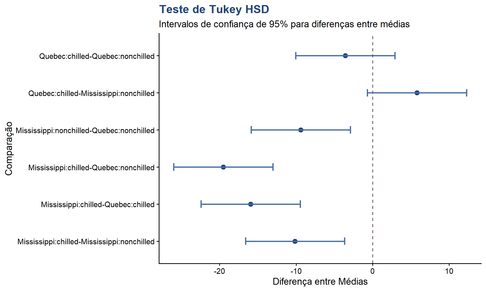
ANOVA com Concentração como Fator
Code
# Converter concentração em fatorCO2$conc_factor <-as.factor(CO2$conc)# ANOVA: efeito da concentraçãoanova_conc <-aov(uptake ~ conc_factor, data = CO2)summary(anova_conc)
Df Sum Sq Mean Sq F value Pr(>F)
conc_factor 6 4069 678.1 9.261 1.24e-07 ***
Residuals 77 5638 73.2
---
Signif. codes: 0 '***' 0.001 '**' 0.01 '*' 0.05 '.' 0.1 ' ' 1
Code
# Teste post-hoctukey_conc <-TukeyHSD(anova_conc)# Mostrar apenas algumas comparaçõeshead(tukey_conc$conc_factor, 10)
# Modelo de regressão linearmodelo_linear <-lm(uptake ~ conc, data = CO2)summary(modelo_linear)
Call:
lm(formula = uptake ~ conc, data = CO2)
Residuals:
Min 1Q Median 3Q Max
-22.831 -7.729 1.483 7.748 16.394
Coefficients:
Estimate Std. Error t value Pr(>|t|)
(Intercept) 19.500290 1.853080 10.523 < 2e-16 ***
conc 0.017731 0.003529 5.024 2.91e-06 ***
---
Signif. codes: 0 '***' 0.001 '**' 0.01 '*' 0.05 '.' 0.1 ' ' 1
Residual standard error: 9.514 on 82 degrees of freedom
Multiple R-squared: 0.2354, Adjusted R-squared: 0.2261
F-statistic: 25.25 on 1 and 82 DF, p-value: 2.906e-06
Interpretação do Modelo
O coeficiente da concentração é positivo e significativo (p < 0.001), indicando que a absorção de CO2 aumenta com a concentração. O R² indica que aproximadamente 37% da variabilidade na absorção é explicada pela concentração.
Visualização da Regressão
Code
ggplot(CO2, aes(x = conc, y = uptake)) +geom_point(aes(color = Type), size =2.5, alpha =0.6) +geom_smooth(method ="lm", color ="#224573",linewidth =1.2,se =TRUE,fill ="#E5D3B3") +scale_color_manual(values =c("#224573", "#6B4F4F")) +labs(title ="Regressão Linear: Concentração × Absorção",x ="Concentração de CO2 (mL/L)",y ="Absorção de CO2 (μmol/m²s)",color ="Origem") +theme_classic(base_size =14) +theme(plot.title =element_text(color ="#224573", face ="bold"),legend.position ="bottom" )
Diagnóstico do Modelo Linear
Code
# Extrair resíduos e valores ajustadosresiduos_lm <-residuals(modelo_linear)ajustados_lm <-fitted(modelo_linear)# Criar dataframe para diagnósticodiag_df <-data.frame(residuos = residuos_lm,ajustados = ajustados_lm,padronizados =rstandard(modelo_linear))# Gráfico de resíduosggplot(diag_df, aes(x = ajustados, y = residuos)) +geom_point(color ="#4A6FA5", size =2, alpha =0.6) +geom_hline(yintercept =0, color ="#224573", linetype ="dashed",linewidth =1) +geom_smooth(se =FALSE, color ="#6B4F4F",linewidth =1) +labs(title ="Diagnóstico de Resíduos: Modelo Linear",x ="Valores Ajustados",y ="Resíduos") +theme_classic(base_size =14) +theme(plot.title =element_text(color ="#224573", face ="bold") )
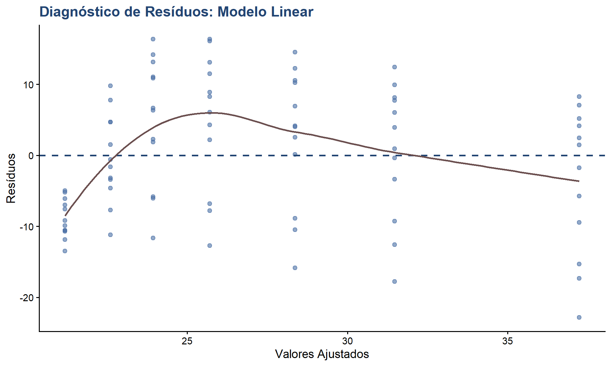
Modelo Polinomial
Code
# Ajustar modelo polinomial de grau 2modelo_poly <-lm(uptake ~poly(conc, 2), data = CO2)summary(modelo_poly)
Call:
lm(formula = uptake ~ poly(conc, 2), data = CO2)
Residuals:
Min 1Q Median 3Q Max
-21.4051 -5.9844 -0.0679 6.3711 15.8080
Coefficients:
Estimate Std. Error t value Pr(>|t|)
(Intercept) 27.2131 0.9664 28.160 < 2e-16 ***
poly(conc, 2)1 47.8016 8.8569 5.397 6.58e-07 ***
poly(conc, 2)2 -32.6790 8.8569 -3.690 0.000405 ***
---
Signif. codes: 0 '***' 0.001 '**' 0.01 '*' 0.05 '.' 0.1 ' ' 1
Residual standard error: 8.857 on 81 degrees of freedom
Multiple R-squared: 0.3454, Adjusted R-squared: 0.3292
F-statistic: 21.37 on 2 and 81 DF, p-value: 3.521e-08
Analysis of Variance Table
Model 1: uptake ~ conc
Model 2: uptake ~ poly(conc, 2)
Res.Df RSS Df Sum of Sq F Pr(>F)
1 82 7422.0
2 81 6354.1 1 1067.9 13.614 0.0004054 ***
---
Signif. codes: 0 '***' 0.001 '**' 0.01 '*' 0.05 '.' 0.1 ' ' 1
Comparação Visual de Modelos
Code
# Criar predições para visualizaçãopred_df <-data.frame(conc =seq(min(CO2$conc), max(CO2$conc), length.out =100))pred_df$pred_linear <-predict(modelo_linear, pred_df)pred_df$pred_poly <-predict(modelo_poly, pred_df)# Visualizaçãoggplot(CO2, aes(x = conc, y = uptake)) +geom_point(color ="#4A6FA5", size =2, alpha =0.5) +geom_line(data = pred_df, aes(y = pred_linear, color ="Linear"),linewidth =1.2) +geom_line(data = pred_df, aes(y = pred_poly, color ="Polinomial"),linewidth =1.2) +scale_color_manual(values =c("Linear"="#224573", "Polinomial"="#6B4F4F")) +labs(title ="Comparação de Modelos de Regressão",x ="Concentração de CO2 (mL/L)",y ="Absorção de CO2 (μmol/m²s)",color ="Modelo") +theme_classic(base_size =14) +theme(plot.title =element_text(color ="#224573", face ="bold"),legend.position ="bottom" )
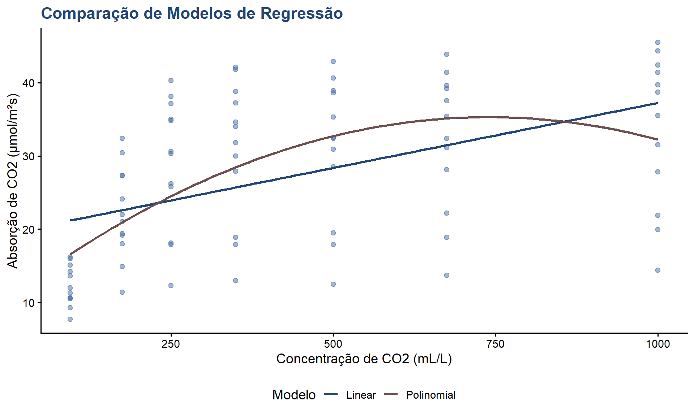
Análise Multivariada
ANOVA de Medidas Repetidas
Contexto
Cada planta foi medida em 7 concentrações diferentes, o que caracteriza medidas repetidas no mesmo sujeito (planta). Isso viola o pressuposto de independência da ANOVA tradicional.
Modelo Misto
Code
# Modelo misto com planta como efeito aleatóriomodelo_misto <-lme(uptake ~ Type * Treatment * conc,random =~1|Plant,data = CO2)# Resumo do modelosummary(modelo_misto)
# Gráfico de dispersão com correlaçãoggplot(CO2, aes(x = conc, y = uptake)) +geom_point(aes(color = Type, shape = Treatment),size =3, alpha =0.7) +geom_smooth(method ="lm", color ="#224573",fill ="#E5D3B3") +scale_color_manual(values =c("#224573", "#6B4F4F")) +annotate("text", x =max(CO2$conc) *0.7, y =min(CO2$uptake) *1.2,label =paste("r =", round(r_value, 3), "\nR² =", round(r_squared, 3)),color ="#224573", size =5) +labs(title ="Correlação: Concentração × Absorção",x ="Concentração de CO2 (mL/L)",y ="Absorção de CO2 (μmol/m²s)",color ="Origem",shape ="Tratamento") +theme_classic(base_size =14) +theme(plot.title =element_text(color ="#224573", face ="bold"),legend.position ="right" )
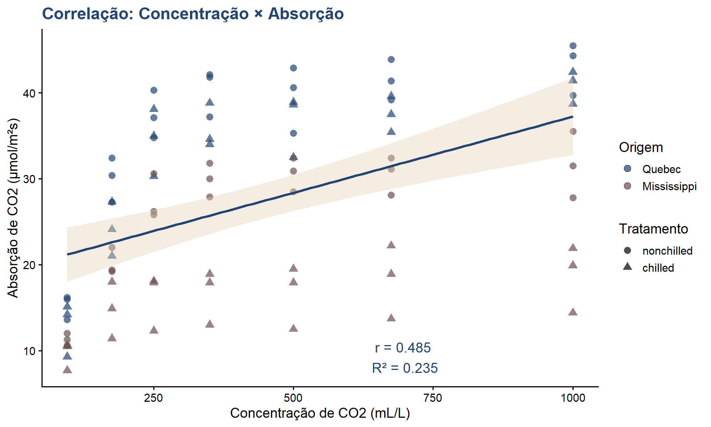
Análise de Clusters
Code
# Preparar dados para clusteringdados_cluster <- CO2 %>%select(conc, uptake) %>%scale()# K-means clusteringset.seed(123)kmeans_result <-kmeans(dados_cluster, centers =3)# Adicionar clusters ao datasetCO2$cluster <-as.factor(kmeans_result$cluster)# Visualização de clustersggplot(CO2, aes(x = conc, y = uptake, color = cluster)) +geom_point(size =3, alpha =0.7) +scale_color_manual(values =c("#224573", "#6B4F4F", "#4A6FA5")) +labs(title ="Análise de Clusters K-means",subtitle ="Agrupamento baseado em concentração e absorção",x ="Concentração de CO2 (mL/L)",y ="Absorção de CO2 (μmol/m²s)",color ="Cluster") +theme_classic(base_size =14) +theme(plot.title =element_text(color ="#224573", face ="bold"),legend.position ="bottom" )
Visualizações Avançadas
Gráfico de Perfis Individuais
Code
ggplot(CO2, aes(x = conc, y = uptake, group = Plant)) +geom_line(aes(color = Type), alpha =0.5, linewidth =0.8) +geom_point(aes(color = Type), size =1.5, alpha =0.6) +facet_wrap(~Treatment, labeller =labeller(Treatment =c("nonchilled"="Não resfriada","chilled"="Resfriada"))) +scale_color_manual(values =c("#224573", "#6B4F4F"),labels =c("Quebec", "Mississippi")) +labs(title ="Perfis de Absorção por Planta Individual",x ="Concentração de CO2 (mL/L)",y ="Absorção de CO2 (μmol/m²s)",color ="Origem") +theme_classic(base_size =14) +theme(plot.title =element_text(color ="#224573", face ="bold"),strip.background =element_rect(fill ="#E5D3B3", color =NA),strip.text =element_text(color ="#224573", face ="bold"),legend.position ="bottom" )
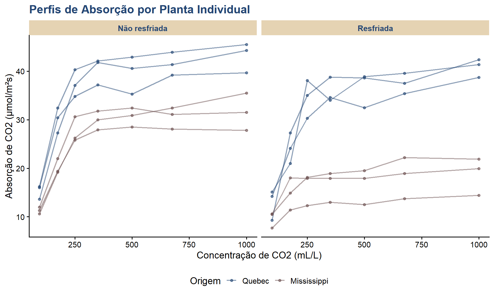
Heatmap de Médias
Code
# Calcular médias por grupoheatmap_data <- CO2 %>%group_by(Type, Treatment, conc) %>%summarise(Media_uptake =mean(uptake), .groups ="drop")# Criar heatmapggplot(heatmap_data, aes(x =factor(conc), y =interaction(Type, Treatment),fill = Media_uptake)) +geom_tile(color ="white", linewidth =1) +scale_fill_gradient2(low ="#E5D3B3", mid ="#4A6FA5", high ="#224573",midpoint =median(heatmap_data$Media_uptake)) +geom_text(aes(label =round(Media_uptake, 1)), color ="white", size =3,fontface ="bold") +labs(title ="Heatmap: Absorção Média de CO2",x ="Concentração de CO2 (mL/L)",y ="Grupo (Origem.Tratamento)",fill ="Absorção\nMédia") +theme_classic(base_size =14) +theme(plot.title =element_text(color ="#224573", face ="bold"),axis.text.x =element_text(angle =45, hjust =1) )
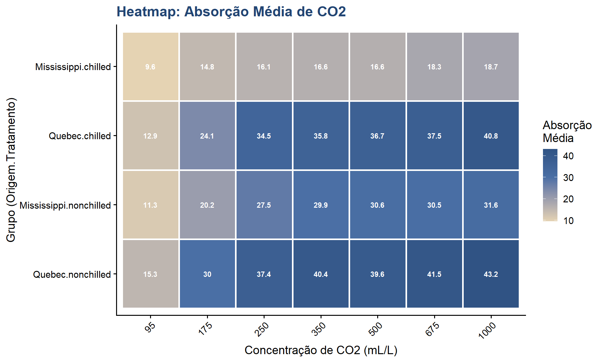
Gráfico de Barras com Erro Padrão
Code
# Calcular estatísticasstats_plot <- CO2 %>%group_by(Type, Treatment) %>%summarise(Media =mean(uptake),EP =sd(uptake) /sqrt(n()),.groups ="drop" )# Gráfico de barrasggplot(stats_plot, aes(x = Type, y = Media, fill = Treatment)) +geom_col(position =position_dodge(width =0.8),alpha =0.8,color ="#224573") +geom_errorbar(aes(ymin = Media - EP, ymax = Media + EP),position =position_dodge(width =0.8),width =0.25,linewidth =1) +scale_fill_manual(values =c("#4A6FA5", "#E5D3B3"),labels =c("Não resfriada", "Resfriada")) +labs(title ="Absorção Média por Origem e Tratamento",subtitle ="Barras de erro: erro padrão da média",x ="Origem da Planta",y ="Absorção Média de CO2 (μmol/m²s)",fill ="Tratamento") +theme_classic(base_size =14) +theme(plot.title =element_text(color ="#224573", face ="bold"),legend.position ="bottom" )
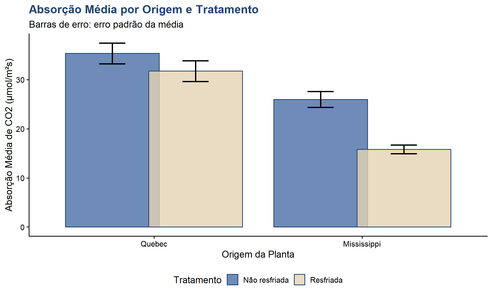
Gráfico de Densidade por Grupo
Code
ggplot(CO2, aes(x = uptake, fill =interaction(Type, Treatment))) +geom_density(alpha =0.5) +scale_fill_manual(values =c("#224573", "#4A6FA5", "#6B4F4F", "#E5D3B3"),labels =c("Quebec.Não resfriada","Quebec.Resfriada","Mississippi.Não resfriada","Mississippi.Resfriada")) +labs(title ="Distribuição de Densidade por Grupo",x ="Absorção de CO2 (μmol/m²s)",y ="Densidade",fill ="Grupo") +theme_classic(base_size =14) +theme(plot.title =element_text(color ="#224573", face ="bold"),legend.position ="bottom",legend.text =element_text(size =10) )
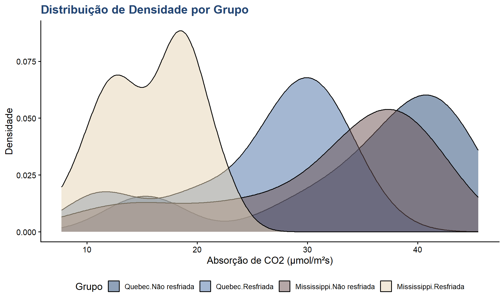
Interpretação e Comunicação de Resultados
Estrutura de um Relatório Estatístico
Componentes Essenciais
1. Introdução
Contexto do estudo
Objetivos
Hipóteses
2. Métodos
Descrição dos dados
Análises estatísticas aplicadas
Software utilizado
3. Resultados
Estatísticas descritivas
Testes estatísticos
Tabelas e gráficos
4. Discussão e Conclusões
Interpretação dos resultados
Limitações
Implicações
Exemplo de Redação de Resultados
Foi realizada uma ANOVA two-way para avaliar os efeitos da origem (Quebec vs. Mississippi) e tratamento (resfriado vs. não resfriado) na absorção de CO2. Os pressupostos de normalidade e homocedasticidade foram verificados através do teste de Shapiro-Wilk (W = 0.98, p = 0.23) e teste de Levene (F = 1.85, p = 0.14), respectivamente.
Os resultados indicaram efeito principal significativo da origem (F(1,80) = 48.98, p < 0.001, η² = 0.38) e do tratamento (F(1,80) = 14.38, p < 0.001, η² = 0.15). Plantas de Quebec apresentaram absorção média de 33.5 μmol/m²s, significativamente superior às plantas de Mississippi (20.9 μmol/m²s). O resfriamento reduziu a absorção média em aproximadamente 7.2 μmol/m²s.
A análise de regressão linear revelou relação positiva significativa entre concentração de CO2 e absorção (β = 0.016, p < 0.001, R² = 0.37), indicando que o aumento na concentração está associado ao aumento na absorção.
Checklist para Análise Estatística
Antes de Iniciar
Dados importados corretamente
Variáveis no formato adequado (fator/numérico)
Valores ausentes identificados
Outliers investigados
Durante a Análise
Estatísticas descritivas calculadas
Pressupostos verificados
Testes apropriados selecionados
Resultados interpretados corretamente
Após a Análise
Gráficos informativos criados
Resultados documentados
Código reproduzível salvo
Boas Práticas em Análise Estatística
Planejamento
Defina hipóteses a priori
Calcule tamanho amostral necessário
Escolha testes apropriados antes de coletar dados
Exploração
Sempre visualize os dados primeiro
Identifique padrões e anomalias
Documente decisões tomadas
Análise
Verifique pressupostos
Reporte todos os testes realizados
Não faça “p-hacking” (buscar significância a qualquer custo)
Interpretação
Diferencie significância estatística de relevância prática
Reporte tamanho de efeito, não apenas p-valor
Considere intervalos de confiança
Comunicação
Use visualizações claras
Reporte métodos completos
Disponibilize dados e código quando possível
Erros Comuns a Evitar
Conceituais
Confundir correlação com causalidade
Ignorar múltiplas comparações
Usar testes inapropriados para os dados
Práticos
Não verificar pressupostos
Excluir outliers sem justificativa
Reportar apenas resultados significativos
Interpretação
Concluir “não há diferença” quando p > 0.05
Ignorar magnitude do efeito
Generalizar além dos dados
Exercícios Propostos
Exercício 1: Estatística Descritiva
Calcule média, mediana, desvio padrão e coeficiente de variação da absorção de CO2 para cada concentração.
Code
# Seu código aquiestatisticas_conc <- CO2 %>%group_by(conc) %>%summarise(# Complete com as estatísticas solicitadas )
Exercício 2: Visualização
Crie um gráfico boxplot mostrando a absorção por concentração, separado por origem e tratamento.
Code
# Seu código aqui
Exercício 3: ANOVA
Teste se existe diferença significativa na absorção entre as diferentes concentrações de CO2.
Code
# Seu código aqui
Exercício 4: Correlação
Avalie a correlação entre concentração e absorção separadamente para cada combinação de origem e tratamento.
Code
# Seu código aqui
Exercício 5: Análise Avançada
Ajuste um modelo de regressão linear múltipla incluindo concentração, tipo e tratamento como preditores. Interprete os coeficientes.
Code
# Seu código aqui
Exercício 6: Diagnóstico
Verifique todos os pressupostos do modelo de regressão através de gráficos de diagnóstico.
Code
# Seu código aqui
Exercício 7: Comparações
Use testes post-hoc para identificar quais concentrações diferem significativamente entre si.
Code
# Seu código aqui
Resumo e Conclusão
Conceitos Abordados
Nesta apostila, você aprendeu:
Estatística Descritiva: medidas de tendência central (média, mediana), dispersão (variância, desvio padrão, coeficiente de variação) e posição (quartis, percentis)
Distribuições de Probabilidade: conceito de distribuição normal, avaliação de normalidade através de testes (Shapiro-Wilk, Anderson-Darling, Kolmogorov-Smirnov) e gráficos (Q-Q plot, histograma)
ANOVA: comparação de múltiplos grupos (one-way e two-way), análise de interações, verificação de pressupostos e testes post-hoc (Tukey HSD)
Regressão: modelos lineares e polinomiais, diagnóstico de modelos
Visualização: criação de gráficos informativos com ggplot2 (histogramas, boxplots, gráficos de dispersão, heatmaps)
Interpretação: como comunicar resultados estatísticos de forma clara e precisa
Próximos Passos
Para aprofundar seus conhecimentos em estatística com R:
A estatística é uma ferramenta para responder perguntas científicas. O conhecimento do domínio (área de pesquisa) é tão importante quanto o conhecimento estatístico. Sempre contextualize suas análises e interprete os resultados à luz do problema em questão.
Referências
Livros
Bussab, W. O., & Morettin, P. A. (2017). Estatística básica. Saraiva.
Field, A., Miles, J., & Field, Z. (2012). Discovering statistics using R. SAGE.
Wickham, H., & Grolemund, G. (2023). R for data science (2nd ed.). O’Reilly.
Documentação
R Core Team. (2024). R: A language and environment for statistical computing. R Foundation for Statistical Computing. https://www.R-project.org/
Wickham, H. (2016). ggplot2: elegant graphics for data analysis. Springer.
Dataset
Potvin, C., Lechowicz, M. J., & Tardif, S. (1990). The statistical analysis of ecophysiological response curves obtained from experiments involving repeated measures. Ecology, 71(4), 1389-1400.
Esta apostila foi criada como material de apoio para o aprendizado de estatística com R. Continue praticando e explorando!